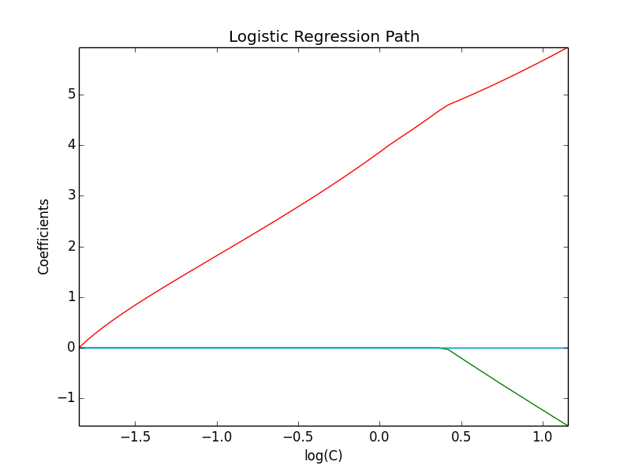

Path with L1- Logistic Regression¶
Computes path on IRIS dataset.
Script output:
Computing regularization path ...
('This took ', datetime.timedelta(0, 0, 24152))
Python source code: plot_logistic_path.py
print(__doc__)
# Author: Alexandre Gramfort <alexandre.gramfort@inria.fr>
# License: BSD 3 clause
from datetime import datetime
import numpy as np
import pylab as pl
from sklearn import linear_model
from sklearn import datasets
from sklearn.svm import l1_min_c
iris = datasets.load_iris()
X = iris.data
y = iris.target
X = X[y != 2]
y = y[y != 2]
X -= np.mean(X, 0)
###############################################################################
# Demo path functions
cs = l1_min_c(X, y, loss='log') * np.logspace(0, 3)
print("Computing regularization path ...")
start = datetime.now()
clf = linear_model.LogisticRegression(C=1.0, penalty='l1', tol=1e-6)
coefs_ = []
for c in cs:
clf.set_params(C=c)
clf.fit(X, y)
coefs_.append(clf.coef_.ravel().copy())
print("This took ", datetime.now() - start)
coefs_ = np.array(coefs_)
pl.plot(np.log10(cs), coefs_)
ymin, ymax = pl.ylim()
pl.xlabel('log(C)')
pl.ylabel('Coefficients')
pl.title('Logistic Regression Path')
pl.axis('tight')
pl.show()
Total running time of the example: 0.13 seconds ( 0 minutes 0.13 seconds)